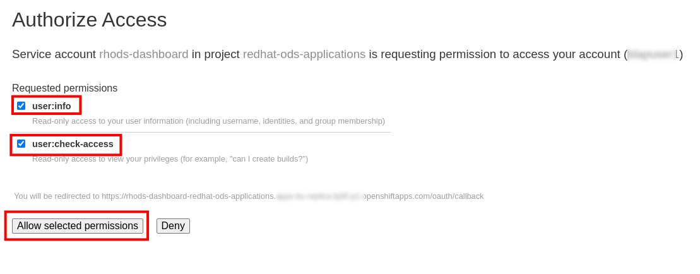
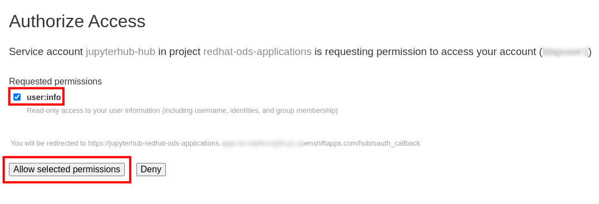
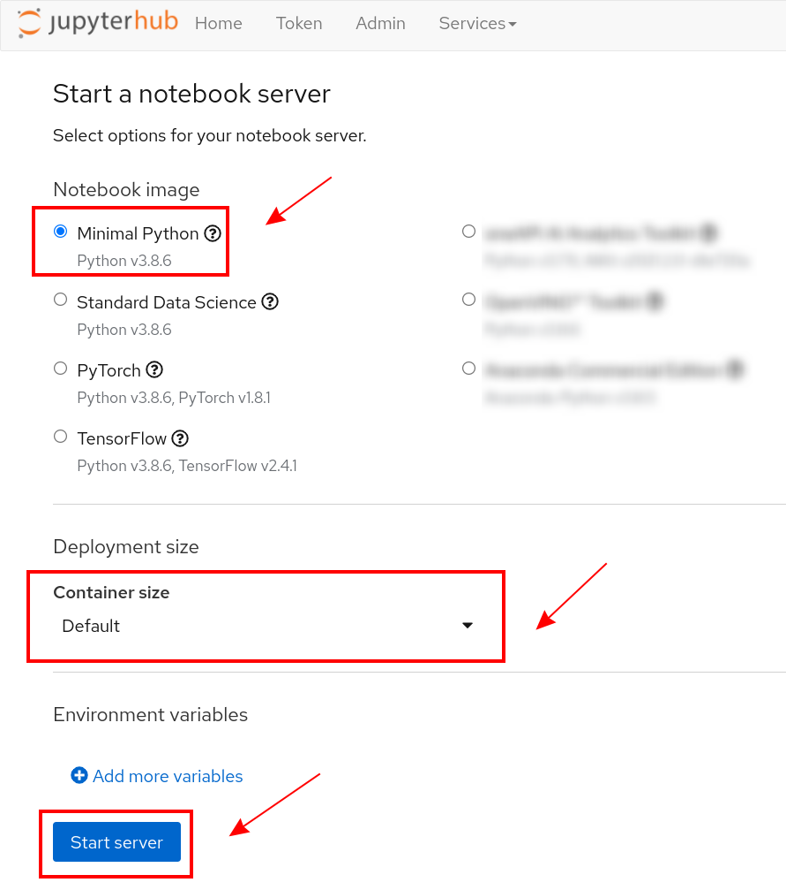
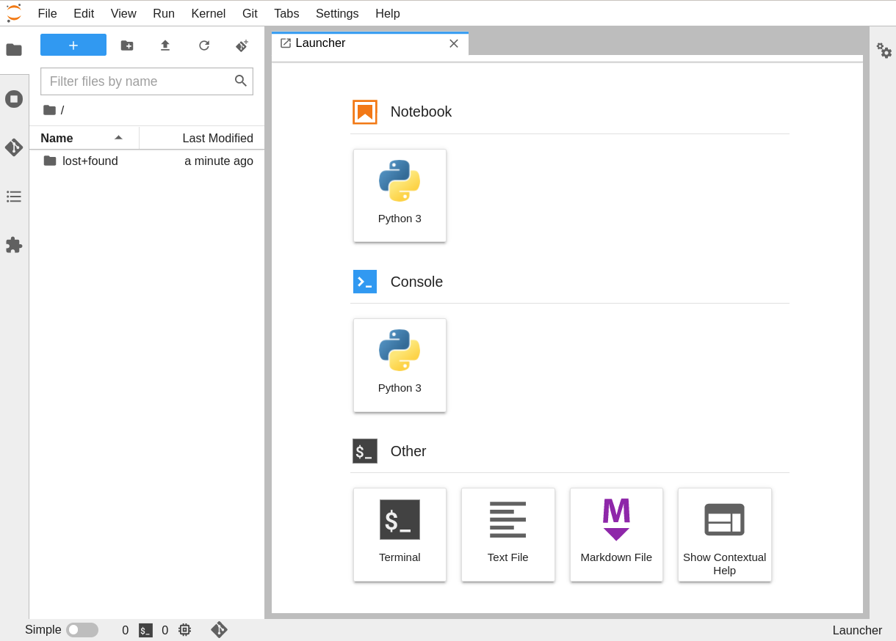

Validation
At this stage, and before you modify and/or customize your RHODS environment in any way, it’s a good time to confirm that your users can access it.
These instructions will walk you through some very basic validation activities.
4.1 Log into RHODS
Get the RHODS URL
-
From the OpenShift Console, click on the application Switcher, and choose Red Hat OpenShift Data Science.

-
This will open a new tab.

-
This URL is the main RHODS URL, and the only one that you need to share with your RHODS end-users.
-
Its pattern should usually be something like:
https://rhods-dashboard-.................openshiftapps.com/
-
Save it or Bookmark it for later reference.
Authenticate
-
Click on the Log in with OpenShift button (from the screenshot above).
-
You will be prompted with one or more possible Identity Providers to choose from, depending on how your OpenShift Authentication is configured.

-
On the next screen, enter the credentials needed.

-
If this is your very first time using the environment, you will be prompted to Authorize Access. Make sure to allow select permissions if you see that screen:
 -
If all goes well, you should now see the Red Hat OpenShift Data Science dashboard

-
If so, continue below.
Spawn a JupyterHub Notebook
-
You want to make sure that you are able to successfully spawn a Jupyter notebook.
-
Click on the "Launch" icon.

-
You will be prompted to choose an identity provider and the matching credentials again.
-
Once again, if this is your very first time using the environment, you will be prompted to Authorize Access. Make sure to allow select permissions if you see that screen:
 -
On the next screen,
-
select the Minimal Python Notebook Image
-
select the Default Container Size
-
then click Start Server

-
-
After a few seconds, you should be able to see the JupyterLab interface for your Notebook:
 -
If you need more details on how to use it, you can check: https://developers.redhat.com/products/red-hat-openshift-data-science/getting-started/launch-red-hat-openshift-data-science/launch-jupyter-hub
-
Close the tab, and continue with the instructions below:
4.2 Get your users started with RHODS
Assuming the steps above were successful, your environment should be ready for use.
To get your users started with it:
-
Share the URL captured earlier, so they can access RHODS directly
-
Remember that the RHODS URL looks like the following:
-
https://rhods-dashboard-.................openshiftapps.com/
-
If there is more than one Authentication Methods defined in your OpenShift,
let your users know which one they should be using. -
If your users are un-familiar with RHODS, they should consult the RHODS Learning path, which will guide them through the first steps.